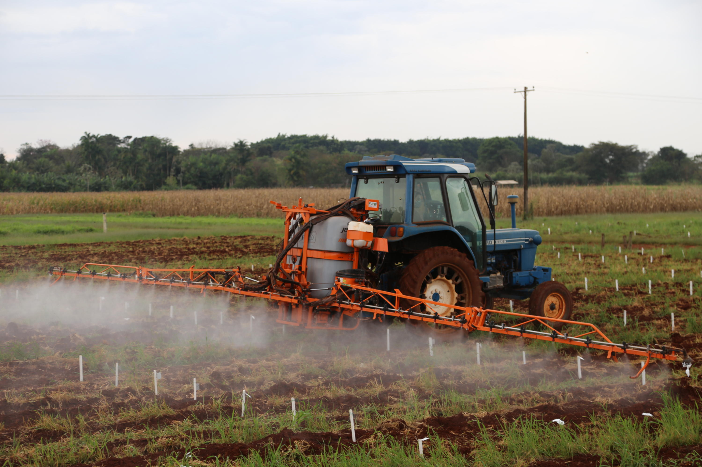
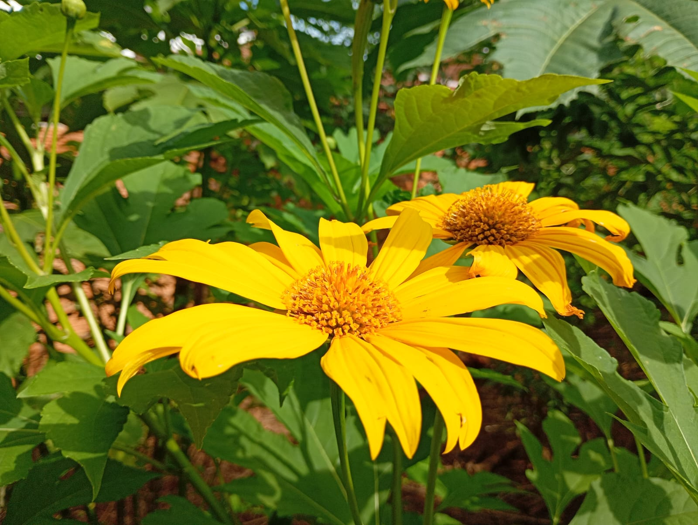
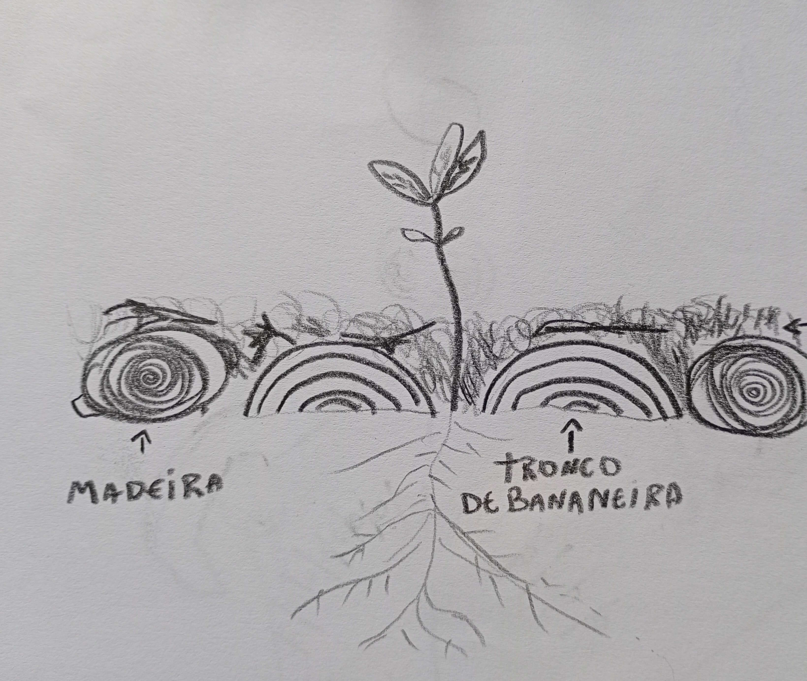
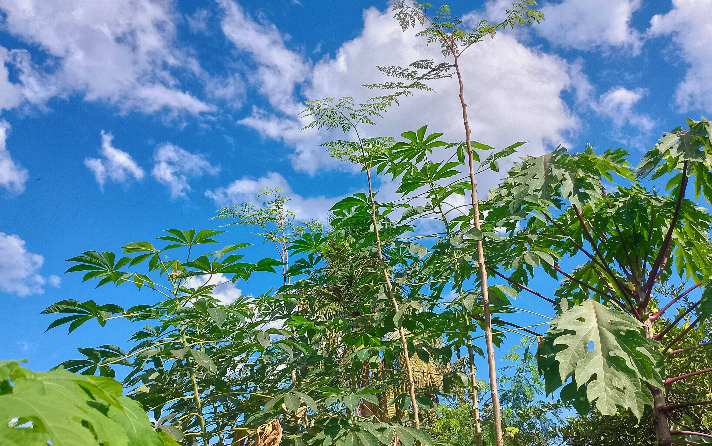
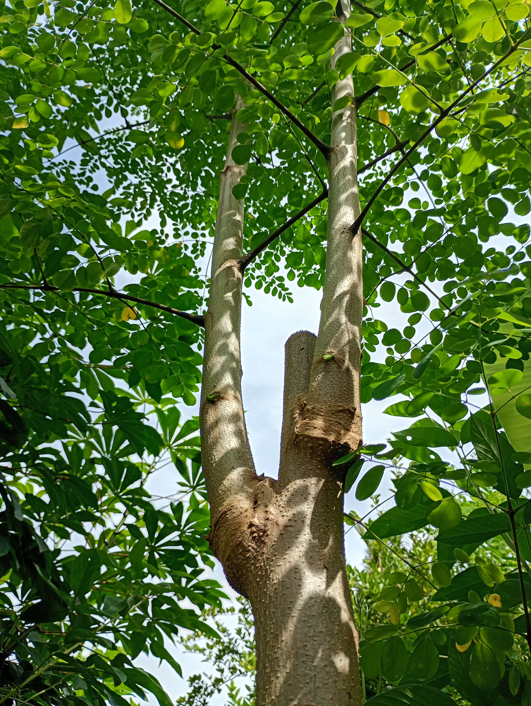
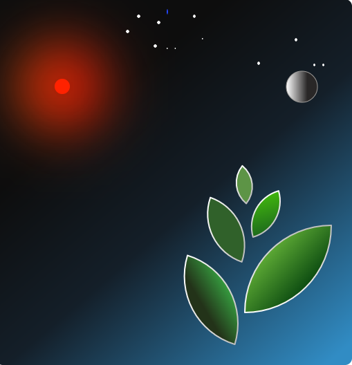

A humanidade tem um grande desafio: recuperar milhões de hectares de terras agricultáveis e
florestas para mitigar os efeitos da crise climática e garantir segurança alimentar e hídrica.
A agricultura florestal é o resultado da observação feita por pessoas e povos ao redor do mundo,
por milhares de anos, dos processos naturais que criam a fertilidade da terra. A sabedoria e as
técnicas são ensinadas, principalmente, por florestas, considerando que é amplamente reconhecida
a ideia de que terra de floresta é fertil, pouco compactada e retém muita água. No entanto, na
medida em que é cultivada, ela vai perdendo sua capacidade de suportar o crescimento e
frutificação de espécies mais exigentes em fertilidade levando, então, à necessidade de deixar
que aquela área descanse ou fique em pousio.
Porém, problemas foram criados: as práticas atuais de do modelo dominante de agricultura, onde
aração constante, plantio de monoculturas, uso de maquinário pesado e aplicação de agrotóxicos e
insumos químicos são práticas incentivadas e normalizadas, fazem com que a terra atinja um nível
de degradação muito alto e, mesmo que ela descanse, vai demorar décadas ou até séculos para a
floresta crescer novamente. Décadas de plantio de monocultura e queimadas destroem o banco de
sementes daquele ecossistema e, também, a terra piorou tanto que as espécies locais não suportam
o nível de degradação.

Além da terra fértil, as matas são essenciais para que tenhamos água, visto que as raízes das árvores e a cobertura da terra com matéria vegetal permitem que a chuva infiltre para os lençóis e aquíferos, em comparação a uma área sem vegetação e com erosão, ou seja: perdemos terra e água quando chove e não há cobertura.
Então, para recuperar áreas degradadas, iremos utilizar técnicas da agricultura florestal, que possuí alguns fundamentos e, nesta introdução, apresentaremos três:
- A cobertura da terra com matéria vegetal e sombra;
- A estratificação;
- As podas e manejo.

A fertilidade da terra e a saúde das plantas envolve, também, outros seres vivos, principalmente fungos, bactérias e insetos que, em sua maioria, moram na terra e, graças ao seu trabalho de decomposição ou transporte de nutrientes, por exemplo, melhoram a estrutura da terra para que ela conserve e infiltre mais água, tornam acessíveis nutrientes e minerais de difícil acesso para as plantas, além de as defenderem contra doenças. Entretando, são vidas frágeis que não suportam calor extremo, como é o caso de terra descoberta, "limpa" ou arada. Quando há pouca vida, a terra fica dura, há menos nutrientes disponíveis e menor infiltração de água.

Portanto, devemos criar um ambiente propício para que exista vida na terra e uma forma de garantir isso é existir uma boa cobertura com matéria orgânica e o plantio de várias espécies de plantas, visto que estes seres também se alimenta das substâncias liberadas pelas raízes. A estratificação Cada planta possui uma quantidade de luz solar necessária para crescer e frutificar bem e isso depende do local de origem dela e, não necessariamente, de sua altura. Nas florestas, percebemos que há "andares", ou seja, cada planta ou espécie ocupa determinada altura e certa quantidade de sombra.
Na agricultura florestal, essas características são classificadas da seguinte forma:
Estrato Emergente: plantas que, em seu local de origem, preferem sol pleno e nenhuma sombra. Nesta categoria estão o milho, eucalipto, girassol, mamona, quiabo, castanha da amazônia, por exemplo.
Estrato Alto: aquelas que preferem muito sol mas que suportam um pouco de sombra. Nesta categoria: manga, abacate, mandioca.
Estrato Médio: preferem média luz e média sombra. Nesta categoria: citrus, banana-prata, alface, cenoura.
Estrato Alto: preferem grande quantidade de sombra mas algumas espécies precisam de luz para frutificar, como é o caso do café e abacaxi. Nesta categoria também estão o acafrão, gengibre, cacau, abóbora, maxixe, espinafre.
| Estratos | Plantas |
|---|---|
| Emergente | Milho, mamão, eucalipto, mamona, girassol, crotalária, pequi, castanha do brasil, jatobá |
| Alto | Manga, abacate, mandioca, pimentas, guandu, brócolis, tomate, couve, algodão, maracujá, |
| Médio | Citrus, bananas, alface, beterraba, cebola, inhame, alho, cenoura, jabuticaba, pitanga, urucum, pokan, amora, |
| Baixo | Cacau, espinafre, batata-doce, café, cará, taioba, feião preto, feijão carioca, maxixe, soja, amendoim, gengibre, abacaxi |

A moringa, caso não esteja em terra degradada demais, cresce mais rápido que a mandioca e, por também ser comestível e altamente nutritiva, torna-se uma excelente fonte adicional de comida. Além disso, é uma boa companheira para a mandioca, já que melhora a terra, cria outras plantas e não faz muita sombra pois seus galhos são fáceis de tirar.
Ao plantar desta maneira, mesmo com a colheita ou a poda total da mandioca, o espaço não ficará sem plantas criadoras de biomassa, comida ou melhoria da terra. Próxima a moringa, podemos plantar as frutíferas e outras árvores do futuro, já que a moringa não vive muito tempo.

Observando este processo, entendemos a necessidade de plantarmos para cortar e cobrir a terra. Geralmente, escolhemos espécies que, além de suportarem podas de toda a copa e cresçam rápido, precisamos daquelas que aguentem um alto nível de degradação, poucos nutrientes e água disponíveis: plantamos eucalipto (há vários tipos), o feijão guandu, o margaridão, o angico e a manga, para citar algumas.

Faça parte da mudança!

Conteúdo adicional:- Forest4Farming - Plataforma gratuita de aulas em Agricultura Sintrópica.
- Manejo Ecológico do Solo - Livro de Ana Primavesi.
- Agricultura Sintrópica segundo Ernst Gostch - Livro de Fernando Rebello e Daniela Ghiringhelo Sakamoto
- Agroflorestando o mundo de facão a trator - Livro com várias autorias.